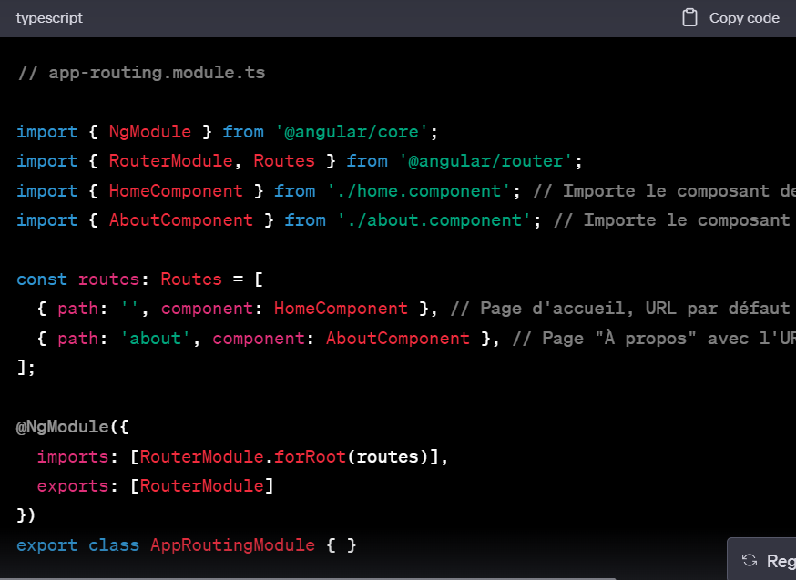
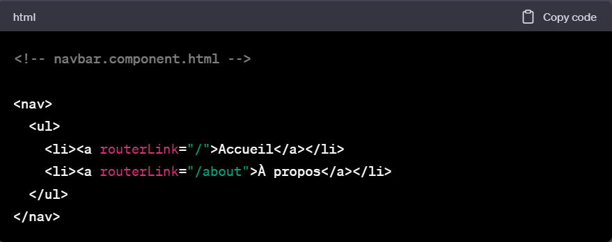
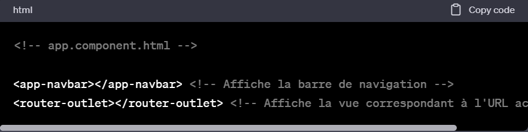

RouterLing
Etapes
- Dans le terminal, assure-toi d'être dans le répertoire de ton projet Angular.
- Pour configurer le RouterModule, tu devrais déjà avoir un fichier app-routing.module.ts dans ton projet (si ce n'est pas le cas, tu peux le créer). Voici à quoi cela pourrait ressembler : 
- Dans ton fichier HTML de la barre de navigation (par exemple, navbar.component.html), tu peux ajouter des liens avec routerLink. Voici un exemple simple : 
- Ensuite, assure-toi d'importer et d'utiliser le composant NavbarComponent dans ton application. Tu peux le faire dans ton app.component.html ou dans un autre composant parent.
- Assure-toi également d'ajouter la balise router-outlet dans le template du composant où tu souhaites afficher les vues lorsque la navigation se produit. Par exemple, dans le app.component.html : 